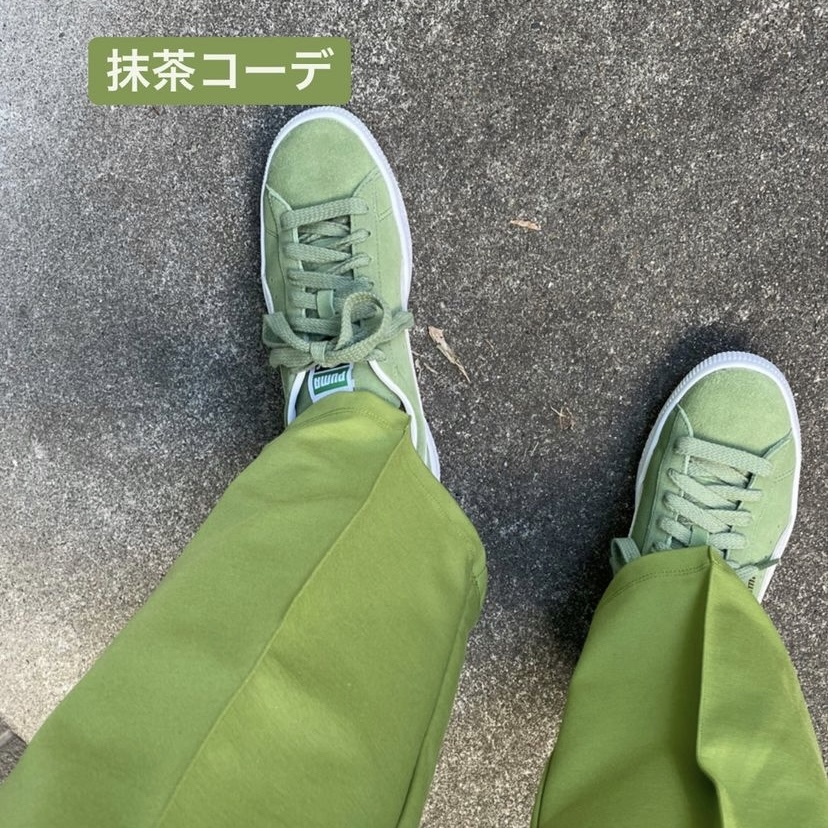

4月15日
緑の服だけを宣伝するWebページを作りアフィリエイトで収益を得る
普段行っているSNS活動から抹茶好きの人、緑色好きの人をターゲットとした企画を考えた。
主な内容は上記に書かれているように緑の服や緑の小物だけを見やすく集めたサイトを作ることでアフィリエイトとして収益を得ようというものである。
当初は自身で緑のものだけのブランドを作る予定であり起業も考えていたが、私自身洋服作り、デザインをしたことがなくまた、企業との提携などにたくさんのお金がかかってしまうため今回はあまりダメージの少ない方法を選んだ。
ところで、緑の服に需要はあるのか。
SNSで私は様々な抹茶好きさんの投稿を見る機会があるが抹茶好きの中でも抹茶界のインフルエンサーとして活動している方々は下記の画像のような全身緑色の格好を日々している。
このようにインフルエンサーの方々が全身緑を着ることにより他の抹茶好きさんも緑の服を着るようになるため需要があると考えた。
次回の授業では実際にどのようにアフィリエイトをしていくのか、またはどのようなWebページが適切なのかなどより具体的に考えていきたいと思う。
